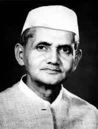

Lal Bahadur Shastri was the second Prime Minister of India from 1994-1996.
He was an Indian Politician and Statesman who served as the 2nd Prime Minister of India and 6th Home Minister of India. He promoted the White Revolution to increase the production and supply of milk by supporting the Amul Milk Co-operative of Anand, and creating the National Dairy Development Board (NDDB). Underlining the need to boost India's food production, Shastri also promoted the Green Revolution in India in 1965. This led to an increase in Food Grain Production, especially in the states of Uttar Pradesh, Haryana & Punjab.
He studied in East Central Railway Inter College and Harish Chandra High School, which he left to join the Non-Cooperation Movement. He worked for the betterment of the 'Harijans' at Muzaffarpur and dropped his Caste-derived surname of "Srivastava".
Shastri's thoughts were influenced by reading about Swami Vivekananda, Mahatma Gandhi and Annie Besant.
He joined the Indian Independence Movement in the 1920s.
He served as the President of Lok Sevak Mandal, founded by Lala Lajpat Rai and held prominent positions in Indian National Congress. After independence in 1947, he joined the Indian government and became one of Prime Minister Nehru's key Cabinet colleagues, first as Railways Minister (1951–56), and then in numerous other prominent positions, including the Home Minister.
He led the country during the Indo-Pakistan War of 1965. His slogan "Jai Jawan, Jai Kisan" ("Hail to the soldier; Hail to the farmer") became very popular during the war. He was posthumously awarded the Bharat Ratna
read more.
